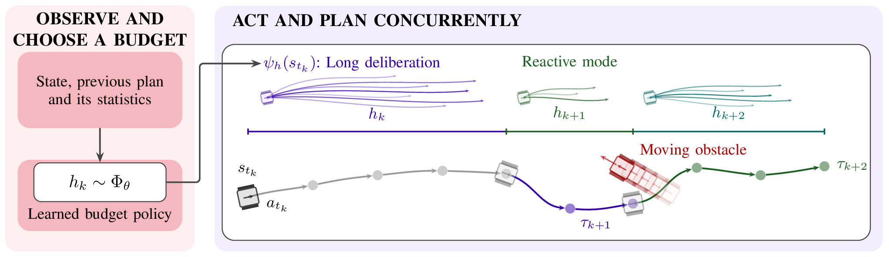
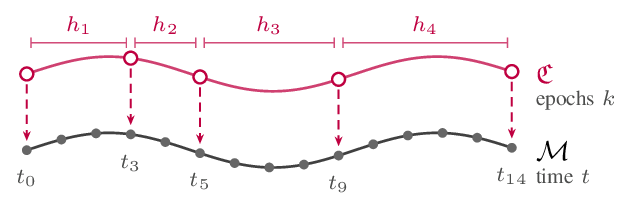
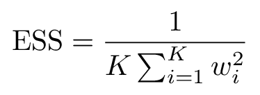
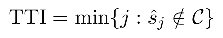
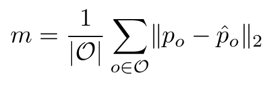
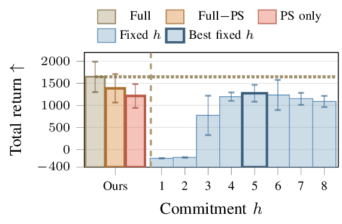

Learning Robot Metareasoning: Adaptive Computation Budgets for Real-Time Control
ICRA2027
Download supplementary video (MP4, 19.5 MB)
Abstract
Planning while moving faces an historical trade-off between deliberation and reactivity. A planner running concurrently with execution needs time to compute, so the robot must commit to an open-loop action chunk for that duration: a longer commitment buys a better plan at the cost of feedback frequency. Existing controllers fix this action commitment, and consequently the computation budget, before deployment. However, the optimal computation time is highly state-dependent (due to factors such as unmodeled dynamics, safety constraints, and marginal optimisation gains), i.e. dynamic, therefore offline static tuning risks leaving systems blind during critical maneuvers or unable to find global effective solutions. We cast the identification of the optimal computation budget as a semi-Markov decision process (SMDP) in which a single decision defines both the robot action commitments and the time allocated to the solver. To solve this, we train a reinforcement-learning policy conditioned on the current state, the executing plan, and inexpensive planner statistics. Across ground-robot navigation, agile quadrotor flight, and contact-rich manipulation, the learned policy changes its budget with the demands of the scenario, discovering efficient reasoning patterns that outperform fixed-budget baselines.
Methods

Our learned budget policy uses the robot state, current plan and planner statistics to choose how long to act before receiving feedback. This commitment also gives the solver time to compute the next plan, balancing deeper optimisation against faster reactions.
We formulate this choice of commitment and computation budget as a semi-Markov decision process (semi-MDP), described below.
Semi-MDP
The policy selects a commitment hk from context zk. Each decision advances time by that duration; summing step rewards ρ within the chunk and discounting by elapsed time preserves the original control objective.


Planner Statistics
At each planning step, a sampling-based receding-horizon solver produces a wealth of information about possible future trajectories, which we believe should inform the adaptive budget policy. We therefore extract three scalars that describe complementary properties: consensus among sampled plans, feasibility of the predicted trajectory, and world-model mismatch.
Effective sample size

How concentrated are the rollout weights? With K rollouts and normalised weights wᵢ, low ESS means a few candidates dominate; high ESS means many contribute.
Time to infeasibility

How soon does a rollout leave the feasible set? The earliest predicted violation measures the remaining safety margin.
Model mismatch

How far do predicted and observed object positions differ within the rollout tube? Larger errors indicate less reliable predictions.
Results
Navigation
Best overall success rate and total return. Across the navigation scenarios, our policy outperforms every fixed strategy by balancing deeper deliberation to find an optimal path with shorter commitments to receive feedback and avoid collisions.


Underactuated drone with cable payload
One task, two computation modes. Our policy discovers longer deliberation for navigation and shorter commitments for frequent feedback during stabilisation. This dual behaviour achieves an 80% success rate, while every fixed commitment fails to complete both goals.
Failure: collision.
0/2 goals reached · 1.7× speed
Failure: suboptimal stabilisation.
1/2 goals reached by timeout · 1.7× speed
Failure: suboptimal navigation.
1/2 goals reached by timeout · 1.7× speed
2/2 goals reached


Contact-rich manipulation
Recovering the best fixed behaviour. In the nominal manipulation setting, the policy selects h = 8 throughout and matches the best fixed baseline. When adaptation offers no benefit, it recovers the best fixed behaviour.
| Budget h | Δx [cm] ↓ | Δθ [rad] ↓ |
|---|---|---|
| 1 | 9.41 ± 1.55 | 0.090 ± 0.055 |
| 2 | 8.22 ± 2.65 | 0.100 ± 0.066 |
| 3 | 5.79 ± 4.50 | 0.049 ± 0.057 |
| 4 | 4.19 ± 4.79 | 0.044 ± 0.056 |
| 5 | 4.48 ± 4.64 | 0.054 ± 0.060 |
| 6 | 4.95 ± 4.64 | 0.072 ± 0.071 |
| 7 | 1.21 ± 1.65 | 0.018 ± 0.023 |
| 8 | 0.65 ± 0.48 | 0.020 ± 0.017 |
| 9 | 1.13 ± 1.46 | 0.022 ± 0.018 |
| 10 | 0.76 ± 0.71 | 0.016 ± 0.014 |
| Ours (h̄ = 8) | 0.65 ± 0.48 | 0.020 ± 0.017 |
The policy selects h = 8 throughout, matching that fixed budget in this nominal setting.
Conclusion
Robot metareasoning is a fundamental capability of embodied intelligence: an agent must decide how much to deliberate under environmental uncertainty and temporal constraints. We introduce a semi-MDP framework for robot metareasoning that learns adaptive computation budgets for real-time control. By leveraging planner statistics, the policy dynamically balances plan execution length and planner computation time based on plan quality and uncertainty. Across three environments with distinct sources of difficulty, the policy adapts its budget to the demands of the task. Our results show that online adaptation is highly beneficial when exploitable budget variation exists. It discovers longer commitments for global route, smooth transit and shorter ones near dynamic obstacles, critical passage and, in cable-payload flight, near targets and disturbances. In contact-rich planar manipulation, the learned policy converges to a constant budget matching the best fixed baseline, indicating that adaptation is unnecessary when the nominal task provides little exploitable variation.
Future work will explore richer, high-dimensional planner statistics, learned world models, and more expressive planning algorithms.